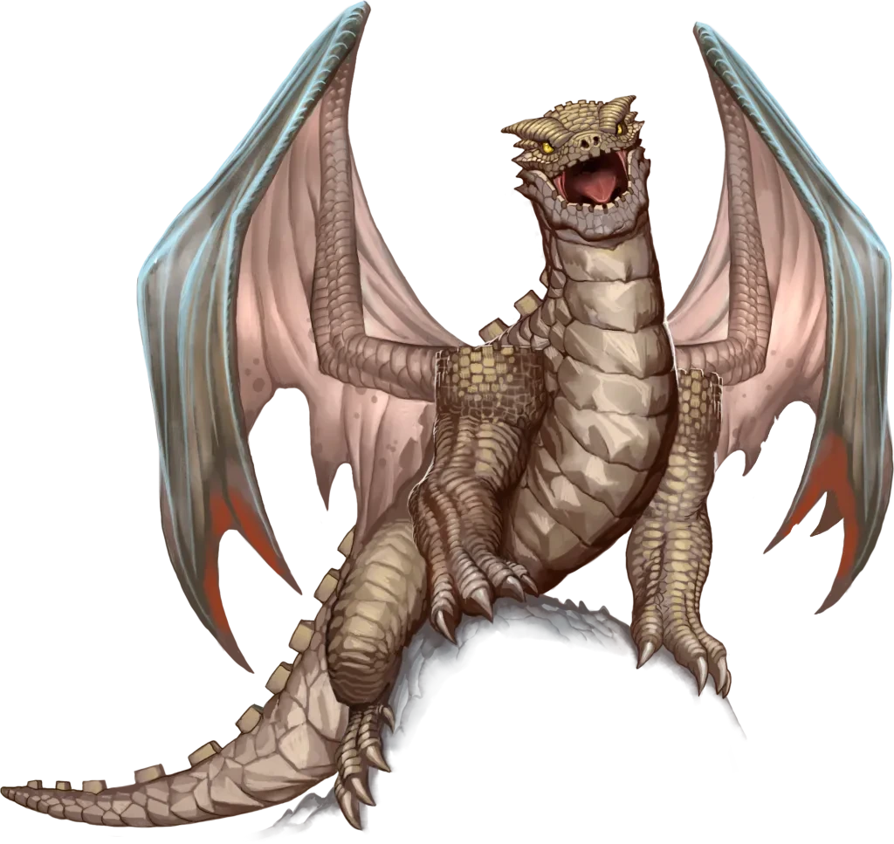
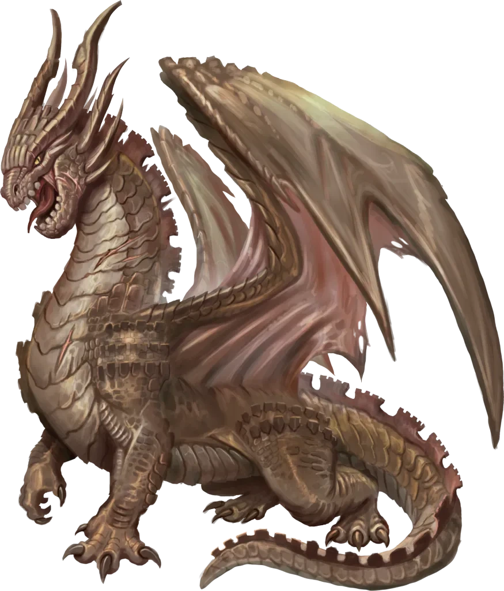

各年龄段数据卡
如果一部传奇史诗描绘了一场宏大的战役，其中大军与一条巨龙并肩作战，甚至由巨龙亲自统帅，那么史诗中提到的十有八九便是一条督军龙。由于外貌与性格各异，督军龙有时会被误归入其他巨龙家族，但它们有一个独一无二的显著特征：鳞片一直延伸覆盖至双翼。覆鳞双翼虽然会对飞行能力造成些许影响，但由此换来的收益远超代价――督军龙能够展开双翼作为护盾，为自身与盟友抵挡漫天箭雨、法术齐射乃至更可怕的攻击。 大多数督军龙不会使用变形魔法化作麾下士卒的形态，而是无论战时还是平时都坚持保持巨龙真身。它们学会了在军阵间小心翼翼地穿行，绝不踩伤自己的盟友。寻常巨龙往往会因骇人威仪而令动物惊恐不安，但奇特的是，督军龙却能抚平受惊动物的情绪，向其注入镇定感，从而协助将它们训练为战兽。当然，这仅限于它们愿意如此之时；面对敌军，督军龙同样能轻而易举地散播恐惧，令敌方的战兽彻底瘫痪。 贾洛克里隆贾洛克里隆更广为人知的名号是“北风钢铁将军”，他曾率军打赢过无数场名垂青史的战役，挫败了众多妄图征服或蹂躏弱小国度的暴君与恶徒。尽管他在成年期便已战死沙场，但其丰功伟绩令昔日并肩作战的将士对他尊崇备至。如今世间存在着好几个教派，分别企图通过神圣或渎神的手段让这条督军龙重返人间。 善意与恶意的复活教派为了争夺埋葬这条督军龙的要塞控制权而屡次交锋，以至于双方至今都未能觅得机会举行各自的仪式。 一旦复活，贾洛克里隆究竟能否保有一丝属于自己的自由意志，完全取决于哪一方教派最终在这场暗影战争中胜出。 然而，督军龙为何要投身于凡人族裔之间的战争？每条督军龙都有自己的答案。有的追求荣耀，有的将其视作神圣的使命与职责，还有的纯粹是为了沙场征伐的热血快感。不过，在面对单个生物或小股敌人时，督军龙有时会因太过无聊而懒得出手，甚至可能拒绝协助盟军，除非对方奉上足够丰厚的贿赂来买下它们的宝贵时间。 部分督军龙拥有一定程度的预知能力，能够预判战役与战争的可能走向。换作更加谨慎的龙族世系，或许会利用这些预警确保自己永远站在胜利者一方，但督军龙却倾向于将此类预言视作警示或挑战。对于最年长的督军龙而言，预示着自身可能陨落的异象反而是一份恩赐，因为这意味着它们有机会为自己的传奇画上荣耀而壮丽的句号。事实上，少数记载太古督军龙战死沙场的传说中，总会伴随着它们以牺牲换来的宏大奇迹――例如让一支全军覆没的部队从新死之中短暂复苏，恰好撑到击垮强敌或掩护幸存者安全撤离。有人说这些巨龙注定会转生为那场战役幸存者的后代，但此类说法往往被批为浪漫化的历史演义，而非确凿史实。 寻道觅信者大多数督军龙都将自己视作宏大命运之力的仆从，或是某一特定信仰与神�o――尤其是司掌战争或守护之神――的信徒。话虽如此，除了少数生于明确侍奉某位神�o的家族中的个体外，绝大多数督军龙直到年岁渐长后才会选定自己的信仰。一条督军龙可能会耗费数十年乃至数个世纪研读宗教典籍、经文与著述，而后才做出抉择。从某种意义上说，择定信仰正是督军龙从青年迈向成年的成年礼。 关于督军龙仍有一桩未解之谜：它们最初究竟源自何方？尽管确实有寥寥数支督军龙的族谱可以追溯至数千年前，但史书中留存的督军龙记载，远超这些家族自然繁衍所能达到的数量。 有人推测，那些无法用自然繁衍解释的督军龙，或许是由某位伟大神明或其他极其强大的存在所创造――本质上重现了远古时代孕育初代巨龙的神圣过程，旨在为凡世提供额外的指引。倘若真是如此，它们必定需要蕴含磅礴伟力的本源素材，其力量之强足以媲美远古诸神之战中被击败的神兽。无论真相如何，“指引”本就因人而异，既能导向善果，亦会酿成恶局。诚然，督军龙会为形形色色的事业高举战旗，无论正义抑或邪恶；而一旦选定了效忠的对象，若无极其重大的变故，它们绝少倒戈易帜。 贾洛克里隆的遗产我曾偶遇一群形迹可疑的人类，他们热切地表示只要我随他们同行，便将“贾洛克里隆的遗产”倾囊相授。遗憾的是，那不过是一个邪教设下的圈套，妄图用我的血肉去复活那条陨落的督军龙。 ――永光贤者卡利赞德雷克斯 “千策之智”阿芙拉科里克萨“千策之智”阿芙拉科里克萨是有史以来最伟大的军事家之一，这条太古督军龙在世界各地超过百场战争中创下了彪炳战绩。 与同巢手足不同，阿芙拉科里克萨自幼便对战争的“方式”与“根源”更感兴趣，而非亲自发起战争或统兵冲锋陷阵。这并不是说她对那些令族人两眼放光的事物无动于衷；她同样乐在其中。这只是说明她对更宏大的命题着迷不已。她以哲学家自居，渴望真正洞悉战争的深层意义与根本成因，期盼有朝一日能够在战争爆发之前便预判战局，并提前制定克敌制胜的方略。 包括她的家人在内，其他督军龙都觉得她的执念古怪至极，尽管或许还带点讨喜的稚气；他们以为等她在战场上多历练一番，假以时日自然会改掉这股怪癖。然而数十年的光阴证明他们错了，阿芙拉科里克萨反而愈发痴迷于自己的研究。 尽管早年间她也曾南征北战，但她的心思从未完全放在眼前的将士与战局之上，因为她始终渴望揭开能够真正洞悉冲突本质的奥秘，并为此分心不已。 哪怕只在战场上投入了寥寥几分精力，深邃的剖析能力依然让她屡出奇谋妙计，一次又一次率领己方走向胜利。当时的这些战术虽算不上惊世骇俗，却已为她赢得了精明战术家与干练统帅的美名。即便如此，当时世人提到她时，更津津乐道的仍是她巨龙的身份，而非她在战场上的某项具体功绩。 别样宝库督军龙固然像其他巨龙一样喜爱成堆的财宝与战利品，但一些观察者――尤其是督军龙身边的亲信顾问与同伴――往往会指出，它们在招揽追随者、士兵与能人异士时同样表现得过分热切。督军龙有多喜欢搜罗得力部属，在失去他们时就有多懊恼；每当有追随者流露出离开其麾下的意愿，它们通常都会反应恶劣。然而，部属辞行所引发的愤慨，与信赖的盟友背叛督军龙时所引爆的雷霆震怒相比，简直不值一提。尽管这种脾性通常会随着年岁与阅历的增长而有所缓和，但对追随者的这份执念，自古以来便是敌人算计督军龙时的关键突破口。 当她终于完成第一阶段的研究时，一切都迎来了巨变。她得以根据地缘政治预判冲突，甚至在战火燃起之前便把握住战争的脉搏与流向，制定出摧枯拉朽的战略，将敌军的入侵扼杀在摇篮之中；她原本也能凭此协助侵略者在守军反应过来之前便打赢一场侵略战争，但她不愿将自己的研究成果用于此类行径。在随后的一个世纪里，她的声望从一名才华横溢的怪才，蜕变为战无不胜的传奇与战场女神。 热闹要塞有些巨龙偏爱与世隔绝的巢穴，以便独享片刻清静与安宁；督军龙则不然，它们更喜欢在人烟稠密之地筑起要塞，让盟友与部属的熙攘喧嚣充满整座居所。对督军龙而言，空荡荡的巢穴只会显得死气沉沉、孤寂冷清，而有人居住的巢穴才令人精神焕发、宾至如归。 哪怕是那些太过年轻或性情粗暴、尚不足以吸引大批智慧生灵追随的督军龙，也可能会邀请一群野狼或一窝蝙蝠与自己同住巢中，只为图个陪伴与热闹声响。 与此同时，她意识到若想将自己的理论与认知推向下一阶段，就必须将目光从宏观大局移开，转而关注入微的细节。她不再因研究战争大势而忽略战场上的细枝末节；相反，随着研究方法的转变，她陡然变得比寻常督军龙更加注重细节。 由于重心的转移、研究成果的显著成效，再加上自身成长为强大的太古龙，她开始赢下一场又一场看似绝无胜算的战争。世界各地的国度争相聘请她。但她很快发现了一个令人沮丧的事实：只要她受聘坐镇某国，就再也没有人敢向该国挑起战端。因此，为了客观地收集数据，她如今已退居幕后，在远方静观世间战火。 开战！督军龙热衷于畅快淋漓的军事战役，但与按契约为出价最高者效力的佣兵龙不同，督军龙更倾向于同成熟的国家或非官方组织建立稳固关系，由对方授予正式军衔与统兵大权。然而问题也随之而来：如果它们所选择的军队并非积习难改的战争狂，也没有时刻遭受其他好战势力的围攻，战争便很有可能宣告结束，迎来一段和平岁月。督军龙关爱自己的部属，希望他们能够安享胜利果实，而非被迫卷入一场接一场的血腥战争；但另一方面，过于漫长的和平又会磨钝它们的才干，甚至迫使它们迁往别处、重新建立自己的影响力。所幸的是，当它们足够年长且强大时，赫赫威名往往会如影随形，让它们得以在新环境中迅速建立信任、晋升军阶。 |
 督军龙  督军龙 |